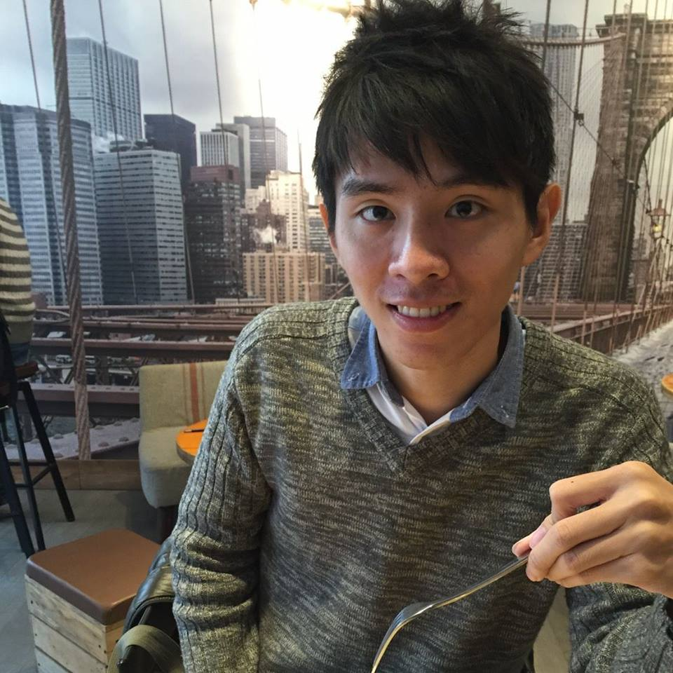

曾文建
目前正在學習前端與後端程式設計，立志成為IOS全端工程師
| birth | 1990 |
|---|---|
| 工作經驗 | 1~2年，生技領域研究員 |
| 技能 | HTML、CSS、JavaScript、Ruby on rails、MySQL |
| 學習經歷 |
1. Swift 3 自學，已完成日記app，熟悉Core data、UIkit、API串接、Json解析 2. 大航道計畫結業(2018期)(預) |
| birth | 1990 |
|---|---|
| 工作經驗 | 1~2年，生技領域研究員 |
| 技能 | HTML、CSS、JavaScript、Ruby on rails、MySQL |
| 學習經歷 |
1. Swift 3 自學，已完成日記app，熟悉Core data、UIkit、API串接、Json解析 2. 大航道計畫結業(2018期)(預) |
我樂於接觸新的知識與技術，在學期間主要修習生物技術相關知識，熟悉各項生物技術操作（PCR、ELISA、westernblotting等），完成多項專案開發（腸躁症益生菌開發、第二型糖尿病藥物篩選等）。
在生技領域的工作中，讓我習慣對於未知的事物保持開放的態度，透過一系列考究方法，從問題中找到解決的方案。然而，在生技領域中，許多假設都必須透過實驗設計來獲得驗證，缺乏系統性的理論可以參考，有時理論甚至會與實驗結果相違背，導致生物技術的應用多處於現象觀察，限制整體應用性。
由於生物技術缺乏應用自由度，我選擇離開生技圈，來到京華管理顧問有限公司，協助輔導國內企業申請政府補助案。針對中小企業之專案標地，進行專案評估與規劃。在職期間，我接觸許多產業，其中資訊科技業最讓我印象深刻，也讓我決定轉往資訊產業。
相較於生物實驗動輒一兩個月，資訊產業工作進程較快，且同樣具有高度挑戰性。而IOS是現今智慧型手機主要兩大作業系統之一，相較過往Android系統，IOS的語言發展時程更久，是更成熟的語言！因此我選擇投入swift的學習。 我於105年11月開始投入swift的學習，目前有利用UIkit導入Core data完成簡單的日記app，讓使用者可以透過文字與圖片，即時紀錄生活中的美好時刻！
這是我利用xcode 8 與swift 3撰寫而成的日記APP，主要利用Core data及collection view來完成。使用者可選擇以文字或圖片來記錄生活中的美好時刻。